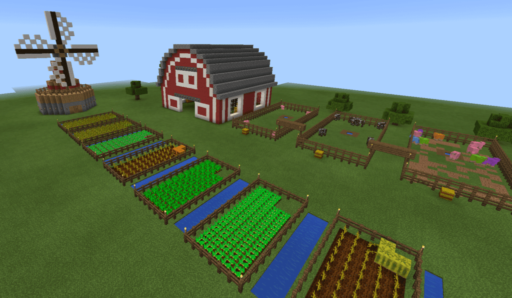
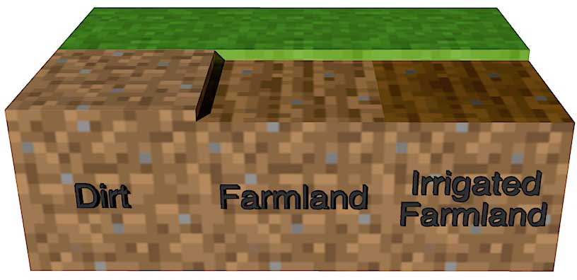
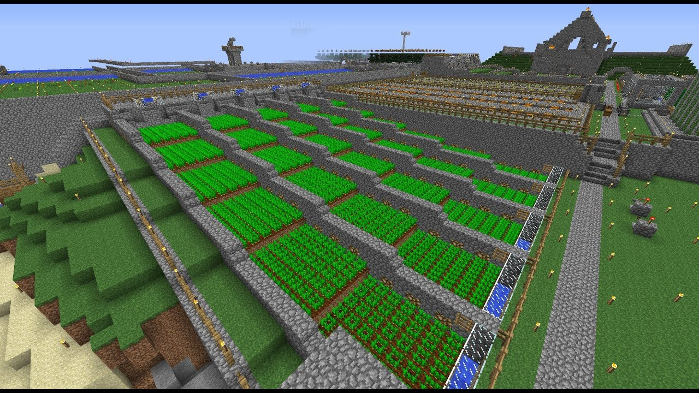
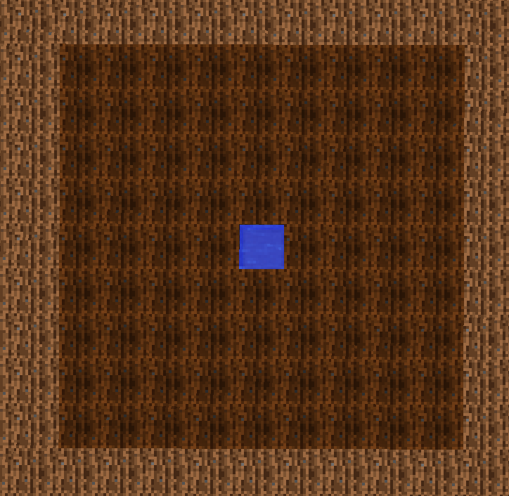

Modest Guides to Minecraft: Farming
Farming:

Minecraft is full of activities to keep you busy in your virtual world for as long as you keep playing. There is an endless variety of things to do and experience, and one of the most enjoyable activities that many players overlook is farming.
Most people who play the game want to try out the combat or are more interested in building a house or other structure that trying to grow their crops. However, if you are playing Survival mode, then growing your supply of crops is essential. It is what keeps you from starving to death, and you can constantly draw from your Minecraft Farm to replenish your health and take care of your needs.
It’s not quite as complicated as real-life farming, but this activity in the virtual Minecraft world is still pretty complex. We’re going to walk you through it step by step so that you can recognize when you need to go to the next part of the farming process and how you can make the most use of this mechanic to do well in the game.
The Right Kind of Soil:

As any farmer knows, you can’t just plant any crop you want in any soil. Some soil is too tough and filled with rocks for plants to grow, and other soil is too soft and moist to nourish the crops properly. It’s the same way in Minecraft, as you need the right kind of soil if you want anything to grow.
You can differentiate soil from dirt blocks in the game by their appearance. The soil is a bit shorter than dirt and it has a slightly darker look. You can create soil by taking a hoe to dirt or grass blocks. That means that just about any grassy or dirt-filled area in Minecraft can be transitioned over to farmland. However, it takes more than soil to grow your plants.
You also need to irrigate or water your soil to create an ideal growing environment. The irrigated soil looks just like regular growing soil, but it is darker due to the higher water content. You can irrigate four blocks of soil at once, just by adding some water to one block. You’ll have to keep your soil hydrated if you want it to remain viable for planting.
Some types of plants don’t need water to grow. Wheat is a prime example. It can grow without water, but it will grow much faster if you keep it watered.
If your soil is left untended for too long and you put no plants in the ground, it will turn back into dirt after a while. It can also revert to dirt when players or mobs jump on it. So, if you want your spoil to remain suitable for growing, then you need to add plants to it as soon as possible and keep it protected from other characters or players, as well as yourself. If you accidentally jump on your crops, they will stop growing and the seed will pop out. Then you will have to start over again.
Note: There are some kinds of plants that grow just fine in regular soil. These are saplings, mushrooms, and sugarcane. You don’t need to transform the dirt into soil to make this grow.
Lighting Needs:
Do you know what else most plants need to grow besides the appropriate soil and some water? That’s right – they require sunlight! This means that if you cover your plants after you plant them, they may not be able to grow. They may receive insufficient sunlight to grow the way you would want them to. So, it’s best if you plant outdoors if you can help it.
You can plant underground or inside your house if you like, and that can be a secure place to grow plants, where they won’t be bothered by mobs in the game or poor weather conditions. If you do that, though, then you need to provide them with artificial lighting. They still need light to grow, so make sure you construct a light source for them to help them along.
Sunlight offers the most abundant light source for your crops, but you don’t need it to make anything in Minecraft grow on your farm. You can have an entire underground farm, but you do need to provide ample lights sources for all of your crops. A torch gives off almost the same amount of light as the sun, which is 14 units of light (compared to the sun’s 15). Jack o’ lanterns and redstone torches work well too, but just know that the lower level the light source is, the longer it may take for some crops to grow.
Fertilizing Your Crops:
It’s no fun to wait around for stuff to grow, but you can always speed the growing process along. Just use some fertilizer, which you can make yourself.
Use bone meal to make fertilizer, and the plants may grow as soon as you apply the bone meal. Just click on the plant with the bone meal in hand and there is a chance that the plant will grow a little bit right then. You a get bone meal from a skeleton’s remains, after defeating one. You see, all those skeleton fights are good for something.
Gathering Seeds:
You will need seeds to start growing plants, and to get them, you will have to destroy grass or find the seeds placed throughout the world. Treasure chests in the game world may contain melon or pumpkin seeds. If you find these as plants in the game, though, you can get seeds from them naturally.
You will find carrots and potatoes sometimes when you kill zombies. They are also found in villages around the game. Wheat can sometimes be found by breaking grass blocks or tilling them.
Most other seeds can be gathered by finding the plant growing in the wild and breaking it down (attacking it) and then pick up the seed. You can look up where to find specific seeds for plants you want to grow. For instance, cacti are found in the desert, whereas sugar cane is found near water, most of the time.
Planting the Seeds:

Once you have prepared your soil and irrigated it, then you can plant your seeds. The seeds will take time to grow, and different factors affect how fast they grow. They start out as small sprouts or just a little bit of the plant growing out of the ground. The plant will get larger and larger, and once it reaches full size, then you can harvest it. You will know the plants are fully grown when they are as big as the plants you found growing wild in the game world when you were out collecting seeds.
You can either wait for the seeds to grow or apply some bone meal to hurry up the process. For immediate growth, just keep applying bone meal. In the case of wheat, the most common type of seeds found in the world, it usually takes two applications of bone meal to make them grow.
Setting up Your Farm:

You probably don’t want to put a lot of maintenance into your Minecraft farm and you want your tract of land you have picked out to be set up in such a way that you won’t have to do a bunch of work or running around. To do that, you want to make sure that all your blocks of soil that have seeds in them are properly watered. One block of water can irrigate a 9×9 grids of soil. Just place your water in the center and allow it to irrigate everything around it. This creates a square or a circle of irrigated farmland.
You can also place a strip of water down the center of the farming plot if you want a rectangular farmland. This is going to be a more practical setup for most types of farms.
You also want to be sure that there is plenty of light on your farm. If you are growing it aboveground, then that isn’t a problem, but underground farms need light sources all along the farmland. You can place torches or other light sources along the edges of your land. So, if you have a reasonably-sized piece of farmland, you can probably do just fine placing a torch at each corner of it. If you go with an oblong farmland arrangement, such as a rectangle, you will likely need a couple of torches or other lights sources on each side. This will give all of your plants enough sunlight to grow properly.
If you find that some of your seeds are not growing into plants, then you may not be giving them water or sunlight. Remember that some will grow slower than others and that if your seeds are not growing very quickly, then they may need some more sunlight.
Most plants take between 10 and 30 minutes to grow fully, without any bone meal fertilizer being added. If you are patient, and you set up the farmland properly, you can get quite a crop from your seeds.